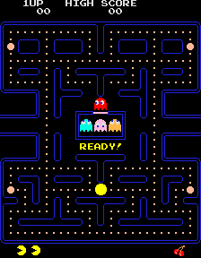
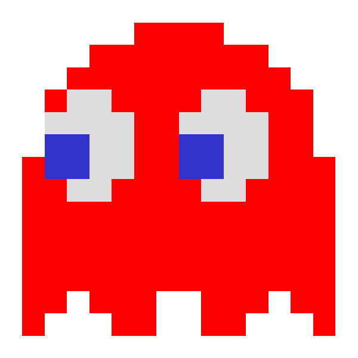
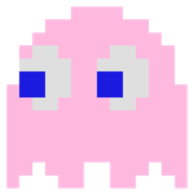

Game target
In Pac-Man, the goal is to eat all the dots on the playing field. When you have collected all the dots,
you move to the next level. This level differs from the previous one mainly by the increasing speed.
You can control Pac-Man with the arrow keys or the joystick. At the beginning you have three lives. The four ghosts
Blinky, Pinky, Inky and Clyde are the antagonists and try to catch you by different strategies. If you are eaten
by a ghost, you lose a live.
Level structure
|  | All Levels in Pac-Man are structured in the same way. You have to collect points to increase your score. If you eat the big dots the ghosts will turn blue for a certain period of time. During this time you can eat the ghosts. When this happens the ghosts move back to there "Ghost-House" and start again to catch Pac-Man. Catching ghosts is not the only way to earn extra points. There will appear some fruits on the playing field during the game. On the left and on the right side of the level is a tunnel. If you go out on the left side, you will come back on the right side. The tunnel is there to confuse the ghosts. |
Ghosts
|  | Blinky the Red Ghost is the leader of the four ghosts. He ist known in Japan as Akabei. Blinky is the ghost that is the easiest to figure out. He ist he most aggressive ghost and his hunting process is the easiest to follow. His target is always Pacman. He follows the last known position of Pacman. During the game the red ghost gets faster and faster. |
|  | Pinky is the only female ghost in the group. She is programmed to find different ways to unexpectedly catch the player. So Blinky chases Pac-Man and Pinky cuts the way off. Pinky is the ghost that is the easiest to control and manipulate. |
| The behaviour of the cyan ghost Inky is the most difficult to predict. Sometimes he behaves like Blinky, Pinky or Clyde. This is because Inky's target square is a combination of Pac-Man's position and Blinky's behaviour. | |
| The orange ghost is Clyde. He moves away from Pac-Man rather than towards him. |
Rules briefly summarized:
- Don't get caught by ghosts
- Collect points
- Eat the fruit pieces and the ghosts to get extra points